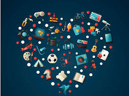

I love to draw and make art. It's a strong passion of mine. I have liked it since I was an itty bitty child and it brings me much happiness. Sadly, I have lost a passion for it after awhile and just got back in to it(2025). I wish for 2026 that I can find more fun things to do and bring me even more joy. I want to become more talented and experienced in different things
"A jack of trades is a master of none, but often better than one."(or smth like that) -Someone, probably Obama.
